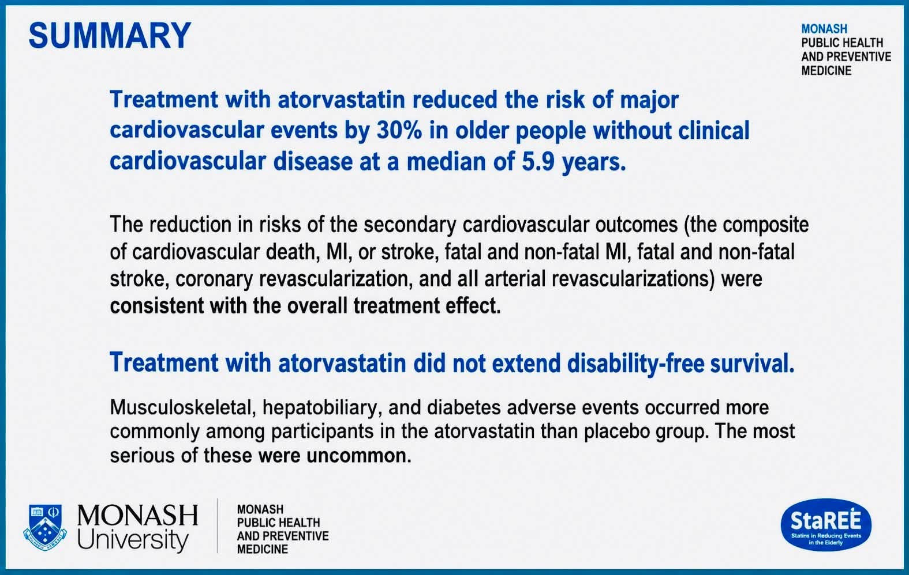

STAREE Trial — Statins for Primary Prevention in Older Adults
The STAREE trial, presented at ESC Congress 2026, provides important randomized evidence supporting statin therapy for the primary prevention of cardiovascular disease in healthy older adults.
Study Population
9,971 adults aged ≥70 years who were living independently and had:
No established cardiovascular disease
No diabetes mellitus
No dementia
Mean age was 74.7 years, and 52% were women.
Intervention
Atorvastatin 40 mg once daily vs. Placebo
Median follow-up: 5.9 years
Major Cardiovascular Events
Atorvastatin produced a significant 30% relative reduction in major cardiovascular events:
6.0% vs 8.3%
HR 0.70; 95% CI 0.61–0.82; P<0.001
The cardiovascular endpoint included:
Cardiovascular death
Nonfatal myocardial infarction
Stroke
Coronary revascularization
Disability-Free Survival
Atorvastatin did not significantly improve disability-free survival, defined by survival free from dementia and persistent physical disability.
12.8% vs 13.6%
HR 0.94; 95% CI 0.84–1.05; P=0.25
Safety
Serious adverse events were uncommon and occurred at the same rate in both groups (2.7%), although musculoskeletal, hepatobiliary, and diabetes-related adverse events were more frequent with atorvastatin.
In selected adults ≥70 years without established cardiovascular disease, atorvastatin significantly reduced major cardiovascular events, although it did not prolong disability-free survival.
Statin initiation in older adults should still be individualized according to overall cardiovascular risk, frailty, comorbidities, life expectancy, potential adverse effects, and patient preferences.
STAREE results were presented today at ESC Congress 2026 and simultaneously published in the New England Journal of Medicine.


![May be an image of slow loris and text that says 'CONCLUSIONS MONASH PUBLIC HEALTH AND PREVENTIVE MEDICINE STAREE is the first arge scale trial of atorvastatin for primary prevention to show cardiovascular benefit in people aged 70 years and older. Whilst no benefit on disability-free survival was demonstrated, this remains an important outcome for older people and the focus of further research. Our data underscore the safety of use of statins in older people. MONASH University MONASH PUBLICHEALTH PUBLIC HEALTH AND ANDPREVEN PREVENTIVE MEDICINE StaREE สิรรันดอ ร้นบดัษ nteEitrty w.iohmihoe.ficorty ආරෙක'](../data/images/1381647756901118/s3.jpg)